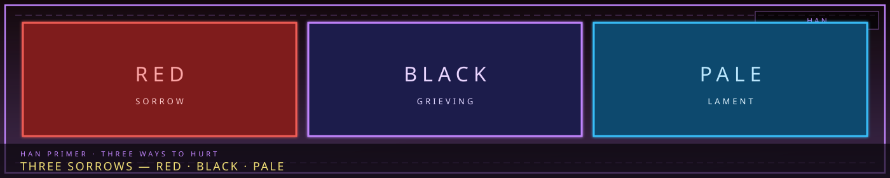

/// RAPID JUMP:
STATUS: ARCHIVE VERIFIED |
CLEARANCE: LEVEL-4 OVERSIGHT |
PROTOCOL: REVERIE DIRECTORATE
ARTICLE
DISCUSSION
SOURCE
HISTORY
YEAR 4,238 · DAWN OF HOPE
LORE & WORLD RECORD
The Three Sorrows (Sorrow, Grieving, Lament)
“Red. Black. Pale. The city has three ways to hurt, and all of them are honest.”

I. Core Concept
Foundational Metaphor: A world literally built upon the collective grief (Han) of its inhabitants. The city's very structure — its buildings, its laws, its reality — is constructed from and sustained by unresolved sorrow, resentment, and injustice.
Name Duality:
- Somnus (Latin — Dream): The realm of subconscious, potential, illusion, memory
- Narak (Korean — Abyss/Hell): The realm of consequence, suffering, inevitability
Central Tension: The world exists between Dream and Abyss. Neither is purely good or evil; both are necessary, both are destructive.
Core Philosophy (Fatalistic): "This is inevitable. We merely manage the flow of grief."
End Goal (Architect's Path): Not to cure Somnarak — but to find a better way to live within it.
The Three Sorrows (삼한 — Samhan)
The Three Sorrows (삼한 — Samhan)
Not all sorrow is the same. In Somnarak, Han manifests in three distinct categories — each with its own source, behavior, and consequence.
| Category | Korean | Source | Character | Manifestation |
|---|---|---|---|---|
| City Sorrow | 도한 (Dohan) | The city's structure, systems, and history | Collective, ambient, structural | Buildings that weep, streets that whisper, the city's weight |
| Outside Sorrow | 외한 (Oehan) | The wilderness, the Desolate, external forces | Wild, unstructured, invasive | Raw Han flows, wilderness entities, Desolate anomalies |
| Inner Sorrow | 내한 (Naehan) | Personal grief, individual trauma, private pain | Intimate, personal, corrosive | Fracture, the Architect's Mark, debt accumulation |
City Sorrow (도한 — Dohan)
"The city remembers what we try to forget."
What it is: Sorrow that comes from the city itself — its structure, its systems, its accumulated history. City Sorrow is not personal; it is institutional. It is the weight of every injustice the system has produced, every debt collected, every exile enforced.
How it forms:
- Accumulated over generations through the city's functioning
- The Collectors' debt enforcement creates City Sorrow
- The Council's decisions create City Sorrow
- The city's existence creates City Sorrow — it feeds on its inhabitants
How it manifests:
- Buildings that weep — walls leaking dark liquid in Zone B
- Streets that whisper — ambient grief replayed by old structures
- The city's weight — a physical heaviness felt in Zone A and B
- Time distortion — City Sorrow stretches time in heavy areas
- The Maw — the ultimate expression of City Sorrow
Who is affected:
- Everyone who lives in the city
- Zone B residents feel it most — the oldest structures carry the heaviest weight
- Zone A residents feel it differently — the Alpha Tree channels it
The danger: City Sorrow is self-perpetuating. The city needs sorrow to survive, but its existence creates more sorrow. This is the paradox the Council manages.
Outside Sorrow (외한 — Oehan)
"Beyond the wall, sorrow has no master."
What it is: Sorrow that comes from outside the city — the wilderness, the Desolate, and the unknown beyond. Outside Sorrow is unstructured — it has not been shaped by the city's systems. It is raw, wild, and unpredictable.
How it forms:
- Han in the wilderness flows freely — not crystallized, not managed
- The Desolate is a mix — partially structured, partially wild
- External events — disasters, conflicts, the actions of other settlements
- Wilderness entities — Sorrow Entities that form outside the city's influence
How it manifests:
- Raw Han flows — rivers of sorrow that seep into the Desolate
- Wilderness entities — Sorrow-Wrought creatures that roam outside the city
- Desolate anomalies — places where Han pools, erupts, or shifts
- Invasion — Outside Sorrow can breach the city's border (Zone E)
- The Scar — a rift in the Desolate where Han erupted during the Occlusihan
Who is affected:
- Zone E residents — the border feels Outside Sorrow most
- Desolate inhabitants — they live in it
- Wardens — they defend against it
- Scavengers — they harvest it
The danger: Outside Sorrow is unpredictable. It doesn't follow the city's rules. It can surge without warning, create new entities, or breach the border. The Wardens' primary job is to keep Outside Sorrow out.
Inner Sorrow (내한 — Naehan)
"The heaviest sorrow is the one you carry yourself."
What it is: Sorrow that comes from within — personal grief, individual trauma, private pain. Inner Sorrow is intimate. It is not the city's weight or the wilderness's chaos — it is yours.
How it forms:
- Personal loss — death of loved ones, broken relationships, missed chances
- Accumulated debt — karmic obligations that weigh on the individual
- Emotional trauma — events that leave lasting scars
- The weight of living in Somnarak — simply existing in a sorrow-structural world
How it manifests:
- Fracture — when Inner Sorrow overwhelms, the person transforms
- The Architect's Mark — physical changes from carrying too much
- Debt accumulation — personal sorrow that crystallizes into obligation
- Echo creation — intense Inner Sorrow can crystallize into currency
- M.A.W. resonance — Inner Sorrow determines M.A.W. compatibility
Who is affected:
- Everyone — no one is immune
- Architects feel it most — they handle raw Han daily
- M.A.W. users — resonance with entities amplifies Inner Sorrow
- The debt-heavy — inherited debt is Inner Sorrow that never fades
The danger: Inner Sorrow is corrosive. Unlike City Sorrow (which is structural) or Outside Sorrow (which is wild), Inner Sorrow eats you from the inside. It is the primary cause of Fracture. And it is the hardest to manage — because it is personal.
How the Three Sorrows Interact
`
OUTSIDE SORROW
(wild, unstructured)
│
▼
┌────────────────────────┐
│ │
│ CITY SORROW │◄─── The city filters and
│ (structural, │ structures Outside Sorrow
│ institutional) │
│ │
└──────────┬─────────────┘
│
▼
INNER SORROW
(personal, corrosive)
`
The flow:
- Outside Sorrow presses against the city from the Desolate and wilderness
- The city filters it — Zone E absorbs the brunt, Zone D mediates
- What remains becomes City Sorrow — structural, institutional, ambient
- City Sorrow weighs on individuals — creating Inner Sorrow
- Inner Sorrow, if unmanaged, creates more City Sorrow — through debt, Fracture, and death
- The cycle continues
The feedback loop:
- Outside Sorrow → City Sorrow → Inner Sorrow → City Sorrow → ...
Why this matters:
- The Council manages City Sorrow — structural solutions
- The Wardens defend against Outside Sorrow — military solutions
- The Architects try to reduce City Sorrow by building better
- The Collectors manage Inner Sorrow through debt enforcement
- The Weavers study all three through the Dream
- The Keepers record all three in the Archive
The question: Can any of the three be eliminated? Or are they all necessary parts of the whole?
CANONICAL RECORD: Sourced directly from the official Project Somnarak Worldbuilding Codex.
Battle System
Full details: SOMNARAK_BATTLE_SYSTEM.md
Overview: Narrative combat framework — 15 sections covering combat flow, entity behavior, personnel actions, consequences, formations, attack patterns, injuries, entity capture, Work Type combat, M.A.W. combat, and retreat mechanics.
Battle Turn Rules:
| Type | Minimum Turns |
|---|---|
| Short | 10 turns |
| Medium | 16 turns |
| Long | 20+ turns |
CANONICAL CROSS-LINKS & ATLAS CONNECTIONS